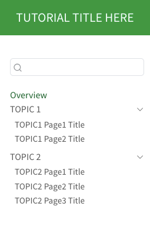

.
├── .github
│ └── workflows
│ ├── citation-check.yml
│ └── publish.yaml
├── .gitignore
├── CITATION.cff
├── LICENSE-CODE.md
├── LICENSE.md
├── README.md
├── TOPIC1
│ ├── page1.qmd
│ └── page2.qmd
├── TOPIC2
│ ├── page1.qmd
│ ├── page2.qmd
│ └── page3.qmd
├── _quarto.yml
├── about.qmd
├── assets
│ ├── LMU_OSC_favicon.jpg
│ └── LMU_OSC_logo.svg
├── index.qmd
├── matomo-analytics.html
└── styles.cssTutorial Template Repo
Background
One of the primary objectives of the OSC is to braoden both knowledge and practice of open science, and the online tutorials we offer are a cornerstone of this initiative. In that regard, some tutorials were brought over by our staff members from previous research institutions, and several more were commissioned between approximately 2021 and 2025.
While the content from these tutorials was designed and/or adapted to fit in with the other tutorials to create a logical learning flow, the tutorials were not technically standardized. That is, the licenses, HTML/CSS formatting, citation styles, and so on were not consistent between projects. Towards the end of 2024 and through 2025 we worked to align our existing tutorials as much as possible on these issues, but this was a significant amount of work.
Wanting to avoid a repeat of this process in the future, we established a templated GitHub repository, lmu-osc/tutorial-template with all of the default settings and files we wish to have applied to our projects going forward. The core contents of this repo are generally intended to be prescriptive when creating new tutorials, outside of deciding what content should be included in the tutorial itself. Let’s explore this in more detail below.
tutorial-template Overview
Rather than linking out to files in the lmu-osc/tutorial-template repository, the code below clones the most up-to-date of the repo so we can look at recent versions. (And if there are new files or sections of code not discussed in this manual, please feel free to open a GitHub Issue for the Manual repo–someone from the OSC will get around to explaining the changes!)
Basic Repo Structure
All of the folders and files in the lmu-osc/tutorial-template repo are laid out in the directory tree below.
Some of these files and folders require more explanation than others, and we aim to clarify all important pieces below. Later chapters will elaborate on how precisely to set up e.g. GitHub Pages for the tutorial, connect with Zotero, etc. But before diving in to developing a tutorial, it’s necessary to get an overview of the structure.
Important Files and Folders
.gitignore
If you’re not familiar with .gitignore files, I recommend taking a look at this overview.
The included ignore file for the tutorials is a modified version of GitHub’s template for R projects with some additions to ignore Quarto specific files, namely the _site folder. Some people push this folder to their GitHub repo, and use it to serve their website from. However, we have a CI/CD workflow that will automatically render the website and serve it from the gh-pages branch.
For Mac users, any .DS_Store files are also automatically ignored–those should never be tracked in a git project anyway as they are local indexing files for searching the system. (Tip: run the R function usethis::git_vaccinate() if you want to globally ignore a handful of annoying files, namely .Rproj.user, .Rhistory, .Rdata, .httr-oauth, .DS_Store, and .quarto.)
.gitignore File Contents
# History files
.Rhistory
.Rapp.history
# Session Data files
.RData
.RDataTmp
# User-specific files
.Ruserdata
# Example code in package build process
*-Ex.R
# Output files from R CMD build
/*.tar.gz
# Output files from R CMD check
/*.Rcheck/
# RStudio files
.Rproj.user/
# produced vignettes
vignettes/*.html
vignettes/*.pdf
# OAuth2 token, see https://github.com/hadley/httr/releases/tag/v0.3
.httr-oauth
# knitr and R markdown default cache directories
*_cache/
/cache/
# Temporary files created by R markdown
*.utf8.md
*.knit.md
# R Environment Variables
.Renviron
# pkgdown site
docs/
# translation temp files
po/*~
# RStudio Connect folder
rsconnect/
# Quarto
/.quarto/
# Future-proofing: ignore commonly included files that should not be tracked
# Inspired by usethis::git_vaccinate() options
.DS_Store
.Rproj.user
.httr-oauth
.quarto
_site/
# Tutorials should pull custom.scss from our central branding repo
lmu-osc-custom.scss.github/workflows
The two files contained in this directory, citation-check.yml and publish.yml, are yaml files for GitHub Actions that should run in your tutorials. The first action file checks that the formatting of your CITIATION.cff file meets requirements, and the publish.yml waits for changes on the main git branch then renders the whole website to the gh-pages branch in the repo.
Both workflows are from commonly available templates, but I have modified the publish.yml to have some additional executuion instructions depending on whether or not the {renv} package is used in your project. (If you have any R code included, then please do use {renv}.)
A later chapter will talk about how to manually run these pipelines if you need/want to for any reason, and will go into more detail on the code. However, 95% of the time you will not need to make any changes to these pipelines. Just be aware that they exist, and they are doing things that should make your life easier.
CITATION.cff
Background: Citation File Format
There is fairly extensive documentation online for Citation File Format, but, in short, it is a standardized method for writing citation files in a yaml format. There are hundreds of different “fields” that can be filled out like DOIs, ORCIDs, author information, institution information, and so on.
Why?
This file ultimately has three main uses for our projects:
- They are needed for automated processing and the DOI generation procedure we use with Zenodo.
- GitHub recognizes these files, and will create a citation for us directly in the repo. (Not as a file, but check out the “Cite this repository” button on the right-hand side of the repository home.)
- This helps prepare the information that goes into the
about.qmdfile, discussed later.
Our File
The current version of the CITATION.cff file is listed below.
CITATION.cff File Contents
cff-version: 1.2.0
message: "If you use this software, please cite it as below."
authors:
- family-names: "YOUR_NAME_HERE"
given-names: "YOUR_NAME_HERE"
orcid: "https://orcid.org/0000-0000-0000-0000"
- family-names: "Lisa"
given-names: "Mona"
orcid: "https://orcid.org/0000-0000-0000-0000"
title: ""
version: 0.0.1
doi:
date-released: YYYY-MM-DD
repository-code: "https://github.com/lmu-osc/"
url: "https://github.com/lmu-osc/"Fields you should pay attention to or fill out:
authorsshould be completed with your family (last) name, given (first) name, and an ORCID for all authors. Remove the ORCID field if you do not have one.titleshould be replaced with the name of the tutorialversionshould begin with 0.0.1 following typical semantic versioning rules. Do not increase this until after making the initial Zenodo connection (discussed in a later chapter).doiwill remain empty inititally, but can be filled out after connecting with Zenododata-releasedshould be the date that the current version of the repo was releasedrepository-codeshould be the link directly to the GitHub repository of the projecturlshould be the address for the actual websige i.e. the GitHub Pages
LICENSES
Our standard licenses are CC-BY-SA 4.0 for the written text and CC-0 for code contained within the tutorials. These license files are contained in LICENSE.md and LICENSE-CODE.md respectively.
README.md
This file should follow the typical conventions of a README file in that it provides a brief overview of the project, and any particular specifications on running code or downloading additional softwares as needed.
Otherwise, we have no strong recommendations on what to include in this file other the Zenodo DOI badge at the top of the file. (Again, this is discussed in a later chapter.)
TOPIC* Directories
These two directories are just example/template spaces for where you should store your Quarto (.qmd) files. In general, we anticipate that the tutorials will be divided into 2-5 broad sections, and each section will be represented by one of these folders. Each section will contain chapters which are independent Quarto files stored within their respective folders.
This image illustrates how “TOPIC1” and “TOPIC2” are the different “sections” of the tutorial while the Quarto files are the different chapters.
├── TOPIC1
│ ├── page1.qmd
│ └── page2.qmd
├── TOPIC2
│ ├── page1.qmd
│ ├── page2.qmd
│ ├── page3.qmd
Note that placing the chapter files in the respective folders will not automatically organize them into that location. You must specify which files are rendered, and where they are located in the _quarto.yml file.
_quarto.yml
The _quarto.yml file can be thought of the central orchestrator for the website. It defines what website themes/CSS/SCSS to use, how the pages should be organized, and other general properties of the website.
_quarto.yml File Contents
# Begin Project
project:
type: website
pre-render: wget -nc https://raw.githubusercontent.com/lmu-osc/branding-resources/refs/heads/main/lmu-osc-custom.scss
post-render: rm lmu-osc-custom.scss
# End Project
# Begin Website
website:
title: "TUTORIAL TITLE HERE"
page-footer:
center: "Copyright, 2024 Open Science Center at LMU Munich"
border: false
search:
location: sidebar
repo-url: https://github.com/lmu-osc/REPO-NAME-HERE
repo-actions: [edit, issue]
back-to-top-navigation: true
page-navigation: true
favicon: assets/LMU_OSC_favicon.jpg
margin-header: |
{width="175"}
navbar:
right:
- about.qmd
left:
- href: index.qmd
text: Home
tools:
- icon: github
menu:
- text: Source Code
url: https://github.com/lmu-osc/REPO-NAME-HERE
- text: Report a Bug
url: https://github.com/lmu-osc/REPO-NAME-HERE/issues
- icon: house-heart
url: https://www.osc.uni-muenchen.de/index.html
sidebar:
style: "docked"
contents:
- text: "Overview"
href: index.qmd
- section: "TOPIC 1"
contents:
- href: TOPIC1/page1.qmd
text: "TOPIC1 Page1 Title"
- href: TOPIC1/page2.qmd
text: "TOPIC1 Page2 Title"
- section: "TOPIC 2"
contents:
- href: TOPIC2/page1.qmd
text: "TOPIC2 Page1 Title"
- href: TOPIC2/page2.qmd
text: "TOPIC2 Page2 Title"
- href: TOPIC2/page3.qmd
text: "TOPIC2 Page3 Title"
# End Website
# Begin Format
format:
html:
theme:
- cosmo
- lmu-osc-custom.scss
css:
- https://raw.githubusercontent.com/lmu-osc/branding-resources/refs/heads/main/lmu-osc-styles.css
toc: true
fontsize: 13pt
code-overflow: wrap
grid:
sidebar-width: 300px
include-in-header:
- file: matomo-analytics.html
# End Format
# Begin Editor
editor: source
# End EditorThis is one of the more complex files in the repository, but there are only a few sections you’ll need to interact with directly. I’ll break down the file based on the 4 major categories in our file: project, website, format, and editor.
project
Project Options
# Begin Project
project:
type: website
pre-render: wget -nc https://raw.githubusercontent.com/lmu-osc/branding-resources/refs/heads/main/lmu-osc-custom.scss
post-render: rm lmu-osc-custom.scss
# End ProjectAt a high level, this defines the entire project as being a website and I have used the pre- and post- render options to collect some standardized SCSS styling from our lmu-osc/branding repository. The details of this are in a footnote below1, but, in short, this is done to ensure that the same branding is added to all of our repos and so that we can just make branding changes to one repo in the future (rather than all of our tutorials.)
website
This is the section you will interact with the most (and almost exclusively) when developing your project. This will be subdivided into 3 sections: a general section, the navbar, and the sidebar.
All
website Options
# Begin Website
website:
title: "TUTORIAL TITLE HERE"
page-footer:
center: "Copyright, 2024 Open Science Center at LMU Munich"
border: false
search:
location: sidebar
repo-url: https://github.com/lmu-osc/REPO-NAME-HERE
repo-actions: [edit, issue]
back-to-top-navigation: true
page-navigation: true
favicon: assets/LMU_OSC_favicon.jpg
margin-header: |
{width="175"}
navbar:
right:
- about.qmd
left:
- href: index.qmd
text: Home
tools:
- icon: github
menu:
- text: Source Code
url: https://github.com/lmu-osc/REPO-NAME-HERE
- text: Report a Bug
url: https://github.com/lmu-osc/REPO-NAME-HERE/issues
- icon: house-heart
url: https://www.osc.uni-muenchen.de/index.html
sidebar:
style: "docked"
contents:
- text: "Overview"
href: index.qmd
- section: "TOPIC 1"
contents:
- href: TOPIC1/page1.qmd
text: "TOPIC1 Page1 Title"
- href: TOPIC1/page2.qmd
text: "TOPIC1 Page2 Title"
- section: "TOPIC 2"
contents:
- href: TOPIC2/page1.qmd
text: "TOPIC2 Page1 Title"
- href: TOPIC2/page2.qmd
text: "TOPIC2 Page2 Title"
- href: TOPIC2/page3.qmd
text: "TOPIC2 Page3 Title"
# End WebsiteGeneral Options
Fields you should update or pay attention to:
titleshould be the actual project titlerepo-urlshould be the URL directly to the GitHub repopage-footerplease update the year in the copyright if needed
General Website Options
website:
title: "TUTORIAL TITLE HERE"
page-footer:
center: "Copyright, 2024 Open Science Center at LMU Munich"
border: false
search:
location: sidebar
repo-url: https://github.com/lmu-osc/REPO-NAME-HERE
repo-actions: [edit, issue]
back-to-top-navigation: true
page-navigation: true
favicon: assets/LMU_OSC_favicon.jpg
margin-header: |
{width="175"}
format
This section only provides additional website formatting and styling decisions, and does not need any changes. (However, if you think there are broad styling changes or additions we should make for all of our tutorials, feel free to open an issue or a PR!)
Format Options
# Begin Format
format:
html:
theme:
- cosmo
- lmu-osc-custom.scss
css:
- https://raw.githubusercontent.com/lmu-osc/branding-resources/refs/heads/main/lmu-osc-styles.css
toc: true
fontsize: 13pt
code-overflow: wrap
grid:
sidebar-width: 300px
include-in-header:
- file: matomo-analytics.html
# End Formateditor
When editing the project in RStudio, this determines whether Quarto documents will open up in source or visual mode by default. We have opted for source as the default.
Source or Visual Editor
# Begin Editor
editor: source
# End Editor.qmd Files
The index.qmd and about.qmd files are the only two Quarto (i.e. .qmd) files that also need to be included in the tutorial–you will presumably author the rest!
The index.qmd file is essentially the home page of the website, much like https://lmu-osc.github.io/manual/ is the home page of this website. You have flexibility to populate this how you see fit.
The about.qmd is much more structured, and will be discussed in later chapters. This page should be updated to include author information, but the other content should not be changed.
Assets Folder
This folder is a quasi-standard location for storing e.g. images, videos, and other media files. The only files we store in here by default are some LMU logos. Please try to make use of this folder for storing your media files.
Footnotes
Due to how Quarto renders projects, the SCSS file must physically be present in the directory when executing. As such, the file is downloaded from our branding GitHub repo before rendering, and then removed again after rendering becasue we do not want to retain this file in the repo. This is in contrast to the CSS file which can simply be read from somewhere on the web, and is the reason why we are able to specify the
cssparameter as just a link to our central branding repo.↩︎